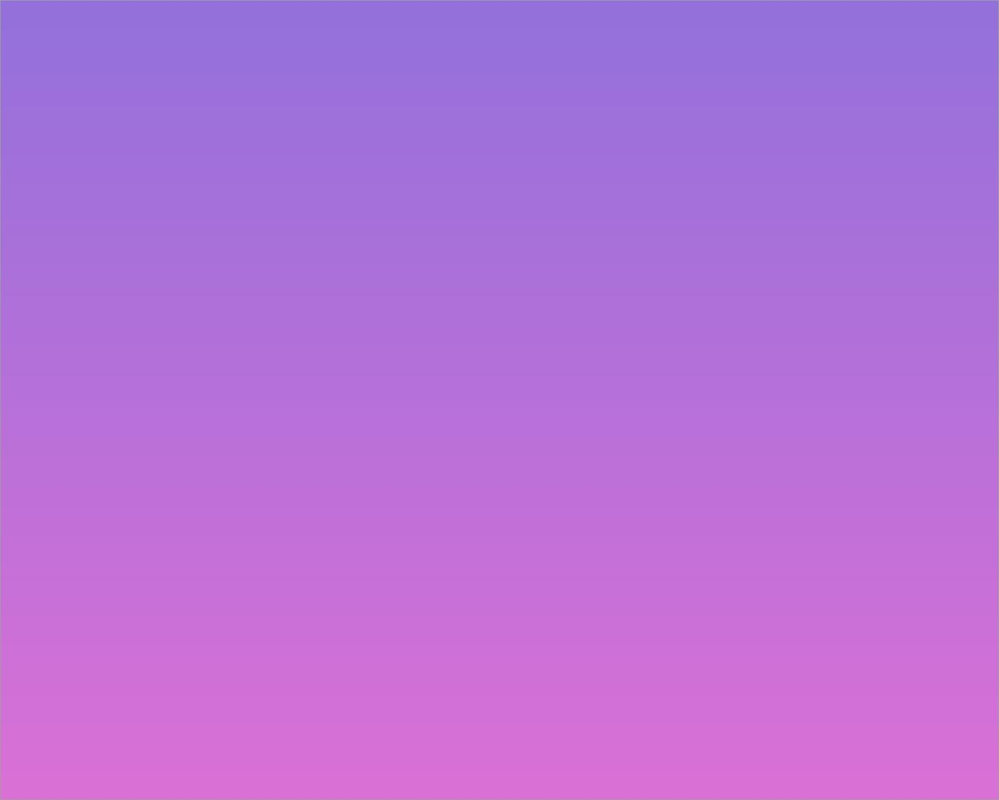
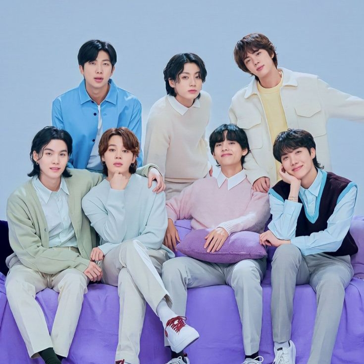
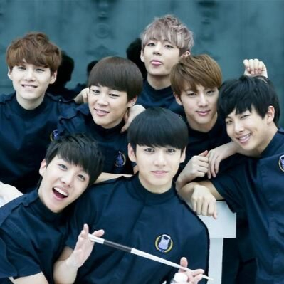

BTS (방탄소년단) is a South Korean boy group that consists of
7 members: RM, Jin, Suga, J-Hope, Jimin, V and Jungkook.
They are under Big Hit Music (part of HYBE Labels). TS debuted
on June 13, 2013 with the lead single ‘No More Dream‘ on album
‘2 Cool 4 Skool‘. On June 15, 2022 BigHit Music released an
announcement stating that BTS would not go on hiatus, but
will focus on releasing solo music for a while.
BTS Fandom Name: A.R.M.Y (Adorable Representative MC for Youth)
BTS Fandom Color: Purple